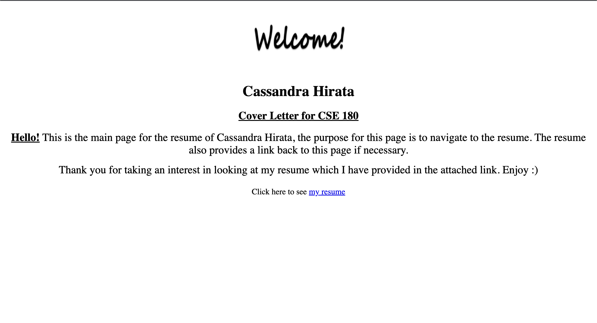
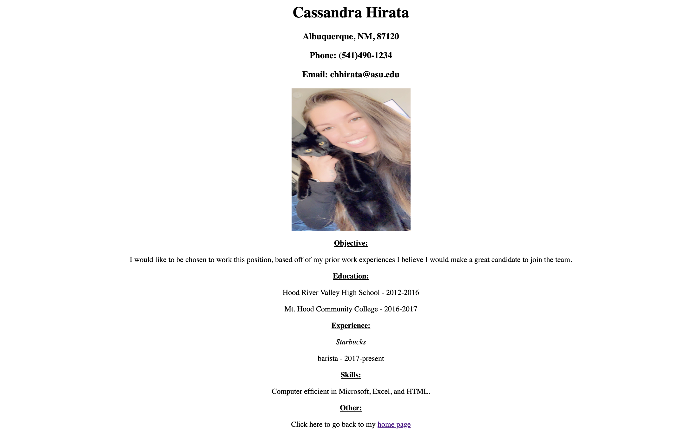
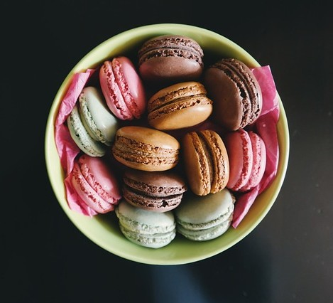

My First Website
One of the first classes at Arizona State University that taught me coding and founded my passion of web development was CSE180 Computer Literacy. Receiving the opportunity to see my growth and progress over the years is an amazing experience.

Amelie Boulangerie
Amelie Boulangerie is a pastry shop looking for their information to be formatted and styled on their website allowing for accessibility to their growing business. Given the businesses images, backgrounds, and favicons. The compatible CSS was the final step to complete this responsive site.
Senior Project
Haru Ga Kita is a bilingual book, written in Japanese and English. The book is based on the song lyrics Haru Ga Kita, Spring Has Come. Each page is illustrated and contains both languages for individuals of all ages to read and enjoy.